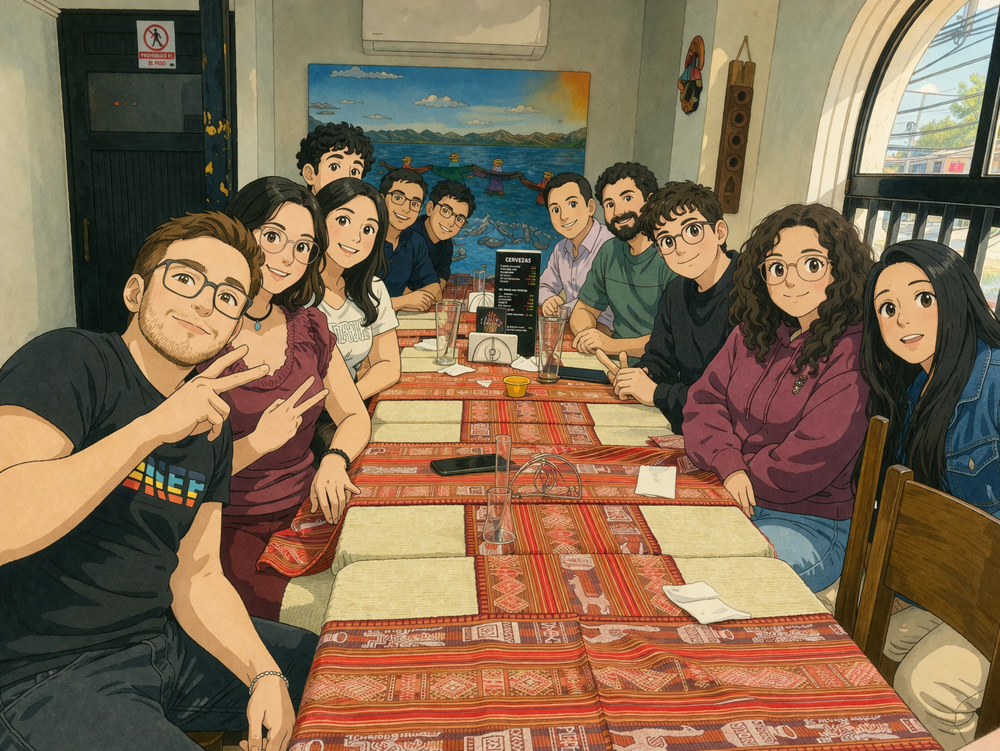
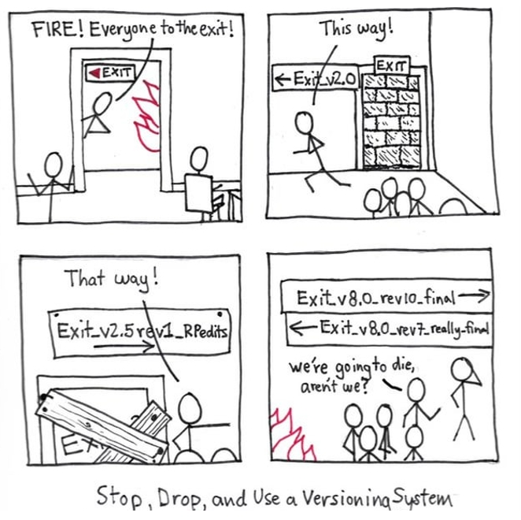
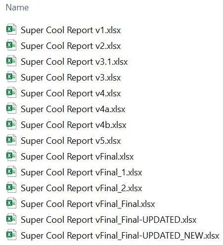
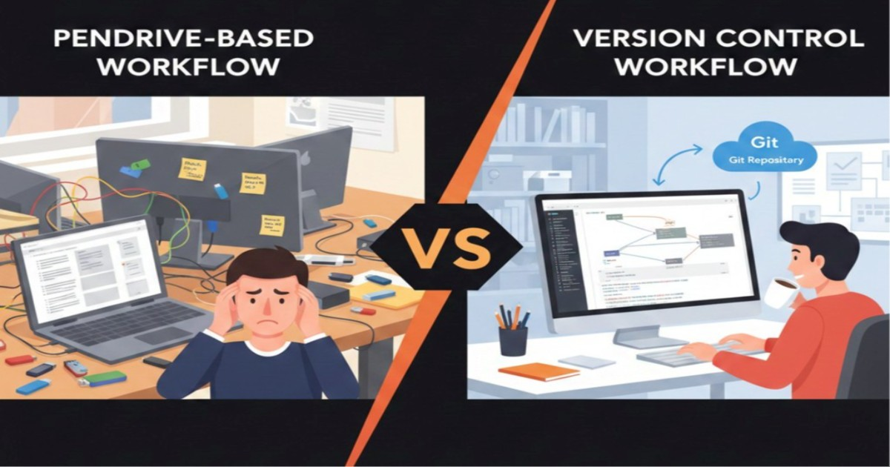
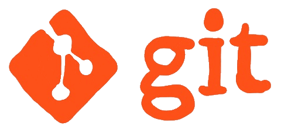
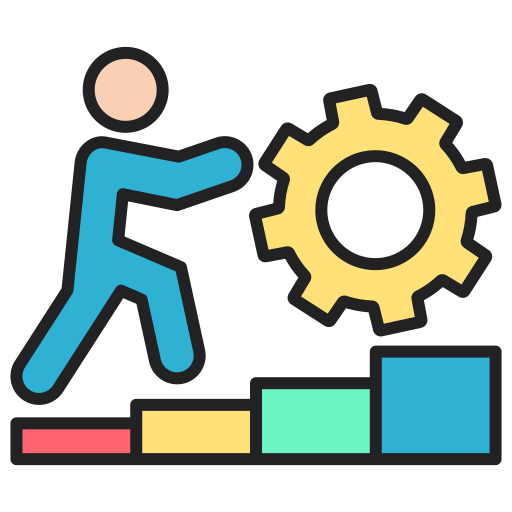
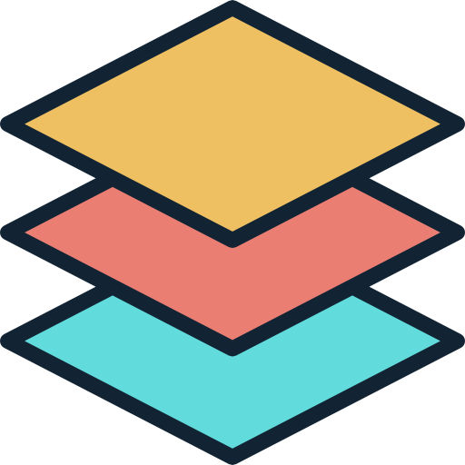
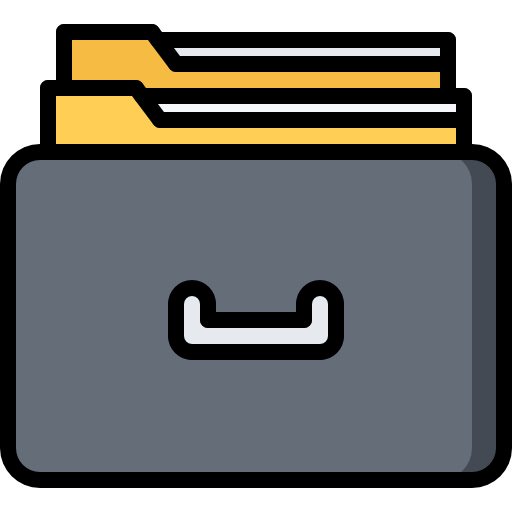
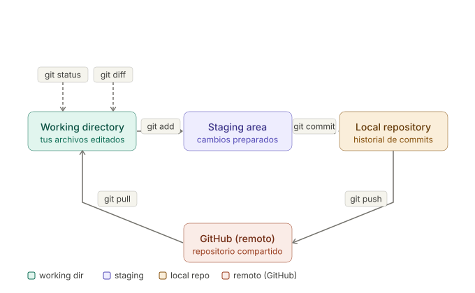

Control de Versiones con Git Del caos al orden
Francisco Alfaro Medina
Valeska Canales Pozo
Mario Navarrete Purcell

Trabajar sin Git

El problema real
informe_final.docxinforme_final_v2.docxinforme_final_BUENO.docxinforme_final_ESTE.docxinforme_final_de_verdad.docx- …
- (y mil archivos más)

El problema no es el archivo
El problema no es el archivo
Es no tener control de versiones

Para eso existe Git + GitHub


Objetivos del Estudio
- ¿Qué es Git y cómo piensa?
- Repositorios y su anatomía en GitHub.
- Branches + PR: flujo real de trabajo.
- GitHub Flow: cómo colaborar sin pisarse.
Comencemos!
¿Cómo piensa Git?

Los tres estados de Git

Working Directory
Donde editas tus archivos libremente

Staging Area
Lo que prepararás para el próximo commit

Repository
Historial permanente de snapshots
El ciclo básico

Pequeño Ejemplo

Conclusiones
Hora del “adiós”
🎉 ¡Gracias por Participar!
🔗 Nuestro Sitio Web: transformaciondigital.usm.cl/dtd/